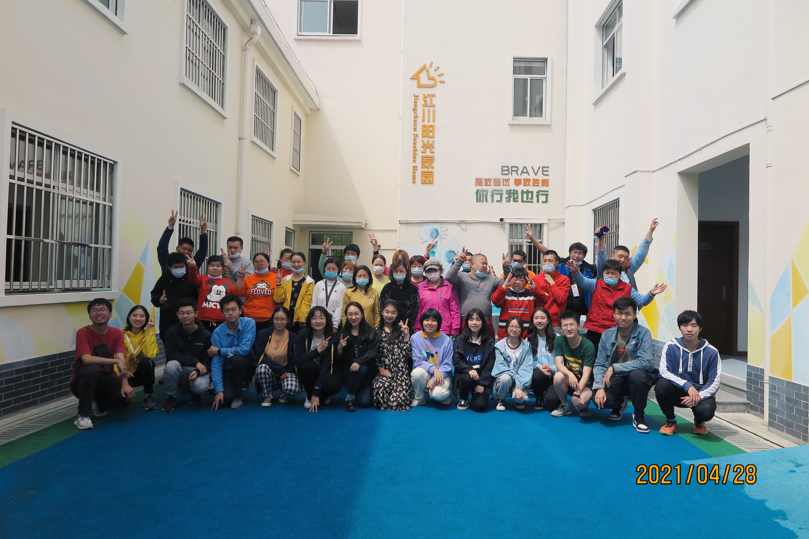
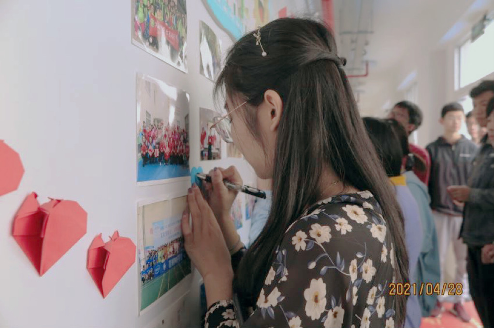
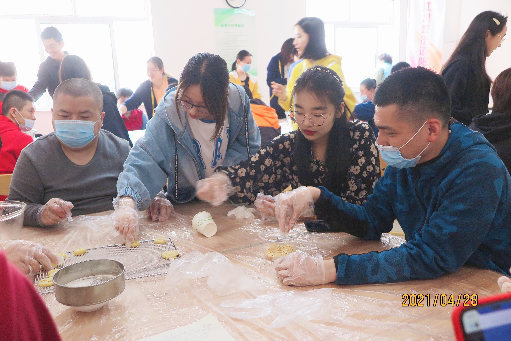
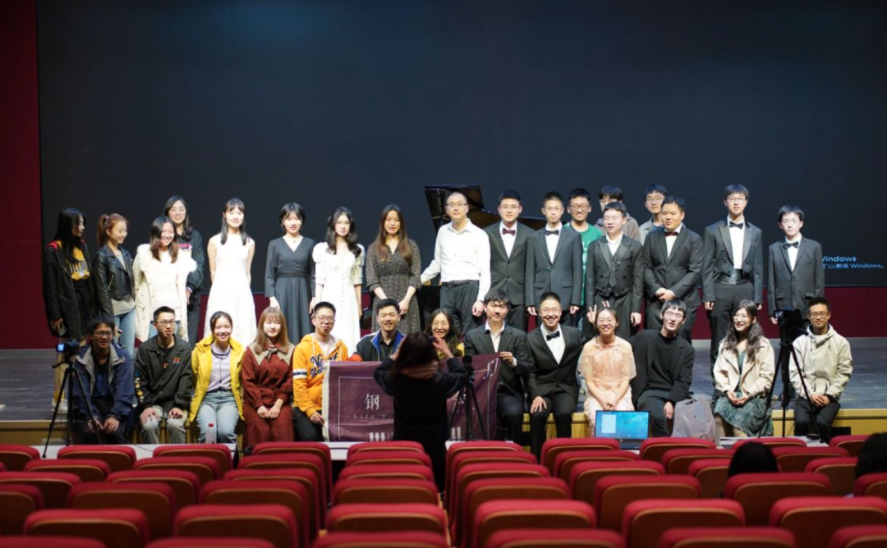
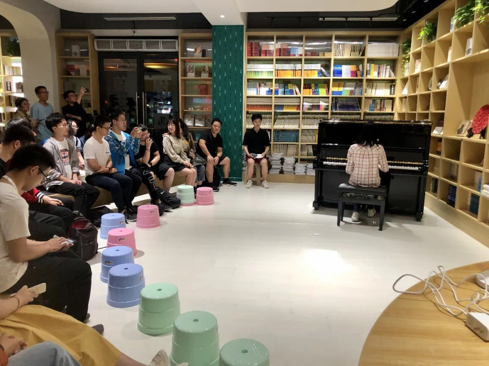

Fangqing Lin
Engineering Student
Education

University of Michigan, Ann Arbor
Aug. 2023 - Dec. 2025 Click for more information
Click for more information
Master of Science in Information - Big Data Analytics
Notable Coursework
- SQL and Databases
- Data Manipulation and Analysis
- Database App Design
- Information Visualization
- Applied Machine Learning
- Data Mining
- Web Design
Shanghai Jiao Tong University
Sep. 2020 - Aug. 2024 Click for more information
Click for more information
Master of Science in Information - Big Data Analytics
Awards
- The Yu Liming Scholarship (2022)
- SJTU Undergraduate Excellent Scholarship (2021 & 2022)
- Student Development Scholarship (2021)
Experience
Youth Volunteer Team of UM-SJTU Joint Institute
May. 2021 - May. 2022Head of Organization and Liaison Department
While a member of the Youth Team, I actively participated in initiatives at "Sunshine House," an organization dedicated to supporting individuals with disabilities. My involvement included collaboratively baking cookies with disabled members and engaging in a variety of group activities, fostering community involvement and enhancing social interactions.
Photo Gallery
- 
- 
- 
Piano Association of SJTU
Aug. 2021 - Aug. 2022Head of Planning Department
As a dynamic leader in the arts, I spearheaded regular major piano concerts and facilitated music-sharing sessions and salons. These events nurtured a vibrant community of music enthusiasts, promoting cultural exchange and significantly enriching the local arts scene. My efforts have been instrumental in fostering an environment where music lovers can collaborate and thrive.
Photo Gallery
- 
- 
Skills
Programming Languages
Advanced: Python, SQL, HTML, CSS, JavaScript, C++
Familiar: C, SPSS, R
Machine Learning
Numpy, Scikit-Learn, Pandas, SciPy, spaCy, TensorFlow, PyTorch, Hadoop
Models

SVM, Linear/Logistic Regression, Naïve Bayes, K-means, Hierarchical Clustering, PCA, XGBoost, LightGBM
Tools

Advanced- Github, Tableau, Matplot, Flask, Altair, Panel, Seaborn, Django, Excel